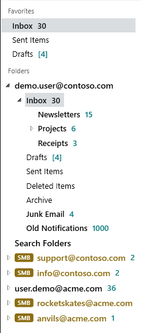
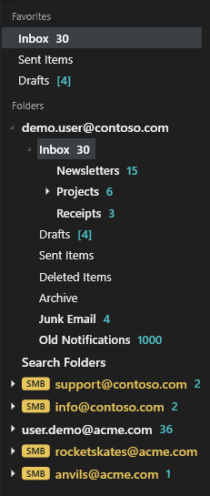
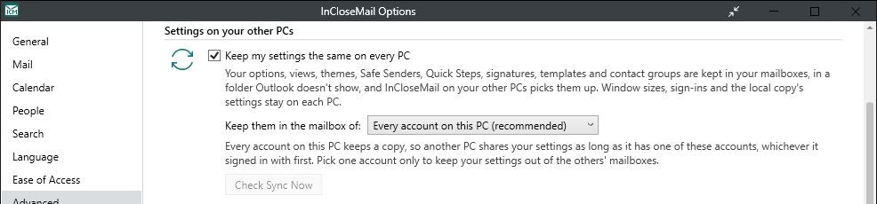
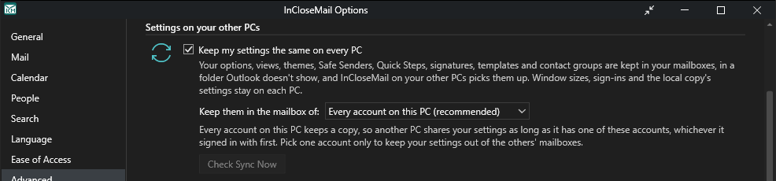

- Microsoft 365 work and school accounts and Outlook.com accounts, signed in through Windows.
- Several accounts at once, each with its own mail and calendar.
- Shared mailboxes, found automatically as Outlook finds them, clearly marked, with Send As and Send on Behalf.




- Microsoft 365 Groups: group conversations and group calendars.
- Your aliases in the From list, and the From address new messages start with.
- The same settings on every PC, kept in the mailbox of every account you use, with Check Sync Now.




- Profiles, as in Outlook: keep Work and Home apart, each with its own accounts and settings, choose one when InCloseMail starts, or switch with Change Profile.
- Mailbox size as Outlook shows it, with your plan’s limit.
Missing something you used in Outlook? Choose Help → Suggest a Feature in the app. Found a bug? Help → Report a Bug sends a bug report to bugs@inclosemail.com.